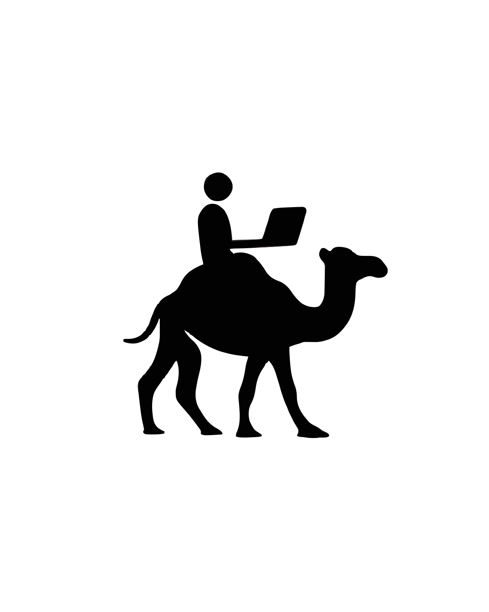

Here are a few ways to refine this paragraph, depending on how formal you want the tone to be.
Option 1: Academic & Direct (Best for a position paper)
"While we strive for research rigor, the realities of our humanitarian settings impose significant constraints. First, the fear of political backlash prevents us from soliciting support from academic scholars. Second, we prioritize volunteers’ limited hours for direct humanitarian efforts rather than administrative meetings; for unfunded volunteers already dedicating five hours a week, adding AI-generated reviews for the sole purpose of empirical study would be exploitative. Finally, we cannot conduct empirical studies with the communities we serve, as doing so would expose them to privacy violations and surveillance risks."
Option 2: Concise & Punchy
"Our commitment to research rigor is tempered by operational realities. Political backlash risks bar us from academic collaboration. We also prioritize volunteers’ time for direct aid over bureaucratic overhead; demanding extra hours for AI-based empirical reviews from unfunded volunteers is unsustainable. Lastly, empirical studies with our communities are impossible without exposing them to surveillance and privacy threats."
Option 3: Slightly Softer Tone (Focuses on "Constraints")
"Although we value research rigor, our humanitarian context limits our methodological options. Concerns about political backlash make it difficult to engage academic scholars. We also must protect volunteers’ time, prioritizing direct aid over additional administrative burdens like AI-generated reviews, which would be unreasonable for unfunded volunteers. Finally, we avoid empirical studies with the communities we serve to prevent exposing them to surveillance and privacy risks."
Key Changes Made:
- Grammar/Spelling: Fixed "capacited" to "constrained/limited," "backslash" to "backlash," "inabiltiy" to "inability," "priorritize" to "prioritize," "humanitarn" to "humanitarian," "emprical" to "empirical," "sruiveillance" to "surveillance."
- Clarity: Changed "render inabiltiy" to "prevents us from" or "bar us from" for better flow.
- Tone: Replaced "inhuman" with "exploitative," "unsustainable," or "unreasonable." "Inhuman" can sound a bit hyperbolic in academic writing; "exploitative" or "burdensome" is more precise when discussing labor and volunteer ethics.
- Structure: Broke the run-on sentence into distinct points (First, Second, Finally) for better readability.
Here are a few ways to refine that sentence, depending on how much emphasis you want to place on the ethical weight of the decision:
Option 1: Direct & Academic (Recommended)
"Finally, we cannot conduct empirical studies with the communities we serve. With basic needs remaining unmet, the surveillance risks (Section 2.3) would further discourage participation in interviews or webforms."
Option 2: Emphasizing the Ethical Priority
"Finally, empirical studies are not feasible because the communities’ basic needs remain unmet. Given these priorities, the surveillance risks (Section 2.3) would inevitably deter them from engaging in interviews or webforms."
Option 3: Concise
"Finally, we cannot conduct empirical studies with these communities; their unmet basic needs, combined with the surveillance risks (Section 2.3), would discourage participation in interviews or webforms."
Key Improvements:
- Removed "let alone": The original phrase "let alone the surveillance risks" was grammatically awkward because it mixed two different types of deterrents (ethical priority vs. safety risk). Separating them or using "combined with" makes the logic clearer.
- Clarified the causal link: Made it clear that the surveillance risk is an additional barrier to participation, rather than just an afterthought.
- Flow: Smoothed out the transition from "unmet needs" to "surveillance risks."

Every answer is guided by the Thaura Constitution